Verification¶
The results produced by the ShakeMap model module are the product of an interpolation scheme based on the statistics of multivariate normal distributions (MVN). See Worden et al. (2018) for a discussion of this approach. The mathematical complexity of the MVN process makes it difficult to ever fully verify the software against all possible inputs, or to even assert with certainty that any particular result is objectively correct (at least once the inputs exceed some minimum level of complexity). Here, we discuss a set of simplified verification tests that provide some support for the belief that the software is producing correct results that are consistent with our hand calculations. These tests are not designed to fully test all of the features of the software – that job is left to our unit tests and integration tests. Here we make numerous simplifications in order to more easily interpret the results.
While the tests discussed in this section are one-dimensional (i.e., the results are computed for a line along which the sources are located), the computational process is agnostic to dimensionality and is only concerned with the distances between locations. Again, our other testing considers more complex models, and the results of those tests appear consistent with the results presented here.
Various simplifying assumptions were made when producing these tests
in order to better illuminate the behavior of the MVN process itself.
In particular, the ground-motion prediction equation (GMPE) used
in these tests always returns a mean of 0 (in log space) for all locations,
and reports a between-event standard deviation of 0.6 and a
within-event standard deviation of 0.8 (making the total
standard deviation a convenient 1.0). In addition, the
cross-correlation function employed in these tests returns the product
of the ratio of the
spectral periods (that is, Ts/Tl where Ts is the smaller period
and Tl is the larger) and exp(-h/10), in which h is the
separation distance. This model, while not the result of an empirical
study, provides a smoother, more predictable behavior than other models
found in the literature and implemented in ShakeMap.
The verification tests may be run from the ShakeMap bin directory with the command run_verification. The command will run the tests and then attempt to open a window displaying the plots. This last step might not work on all systems. The plots can be found in tests/data/eventdata/verification_test_XXXX/current/products (where “XXXX” is the number of the test).
Test 0001¶
Fig. 1.16 shows the results of Test 0001. This test places two observation points along a line. As discussed above, the GMPE evaluates to 0 (in log units) everywhere. Both observations in this test also have an amplitude of 0.0 (in log units), so the computed bias of the event is 0. Thus, the conditional mean amplitude evaluates to 0 everywhere. The standard deviation is 0 at the location of the observations, and at great distances from the observations it asymptotes to a value somewhat less than 1 (but still greater than the GMPE’s within-event standard deviaiton of 0.8). This is because with only two observations, the considerable uncertainty of the bias is applied to the within-event uncertainty. These are the expected results, are consistent with our hand calculations, and provide some confidence that the MVN implementation is not introducing a bias or other anomalies.
{kind=link}
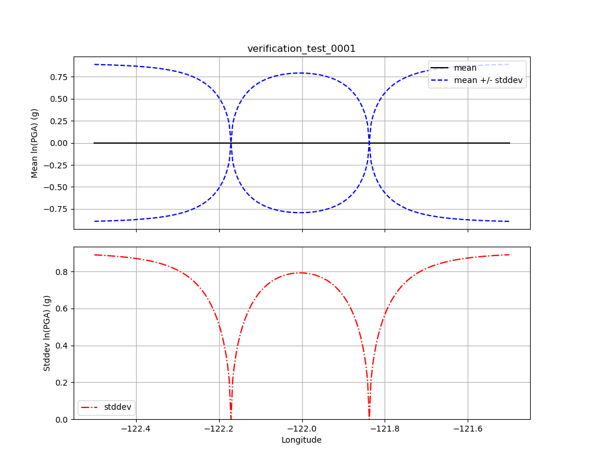
Fig. 1.16 Verification Test 0001. Two observations along a line have amplitudes of 0. The black line shows the conditional mean, the blue lines show the conditional mean +/– the conditional standard deviation (upper plot), and the red line shows the conditional standard deviation (lower plot).¶
Test 0002¶
Test 0002 is shown in Fig. 1.17. In this test, one observation has an amplitude of +1.0, the other is –1.0. Because of the offsetting observations, the bias is again 0. The figure shows that the conditional amplitudes reach the expected value (+/– 1.0) at the observation points, and approach 0 at distances far from the observations. As with Test 0001, the standard deviation is 0 at the observations and reaches a maximum somewhere between 0.8 and 1.0 at great distance from the observations.
{kind=link}
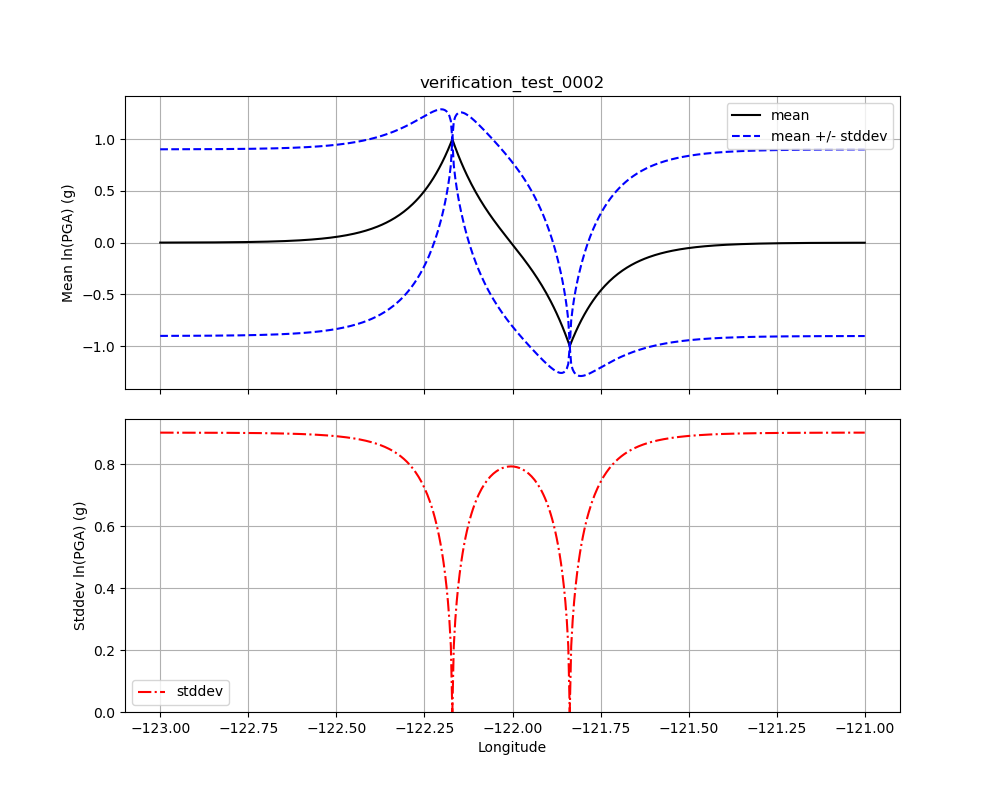
Fig. 1.17 Verification Test 0002. Two observations along a line have amplitudes of +1.0 and –1.0. The black line shows the conditional mean, the blue lines show the conditional mean +/– the conditional standard deviation (upper plot), and the red line shows the conditional standard deviation (lower plot).¶
Test 0003¶
Verification Test 0003 has a single observation with an amplitude of +1.0 along a line (see Fig. 1.18). We start with equations 12 and 13 of Engler et al. (2022) (see Data Processing for additional discussion of the equations presented below):
and
In the bivariate case, these reduce to:
and
In our case the GMPE mean is 0 and the observation is 1. The within-event standard deviation (\(\phi\)) is 0.8, and the between-event standard deviation (\(\tau\)) is 0.6. The term \(\sigma_\epsilon\) is the standard deviation of an observation when the observation is uncertain. In this case \(\sigma_\epsilon=0\), however in later tests it will become important. Thus we have:
and
The bias is then given by Engler et al. equation 14:
Thus, the bias is 0.36, as seen in Fig. 1.18 (solid black line) at distance from the observation.
As discussed in Computing the MVN, the conditional mean and covariance are given by Engler et al. (2022) equations 19 and 20:
and the total covariance:
where
and
In the bivariate case, these equations reduce to, respecively:
where the term \(\sigma_{{W_1}{W_2}}^2\) is a cross-covariance term. When the output point is located at the observation point, the correlation is 1, and \(\sigma_{{W_1}{W_2}}^2 = \phi^2\). When the output point is distant from the observation point, the correlation is zero, and \(\sigma_{{W_1}{W_2}}^2 = 0\). Thus, at the observation point, we have:
As we see in Fig. 1.18, at the observation point, the mean is 1.0 (top), and the standard deviation is 0.0 (bottom).
At distance from the observation (where \(\sigma_{{W_1}{W_2}}^2 = 0\)), we have:
Again, in Fig. 1.18 we see at distance from the observation point, the mean is 0.36 (top), and the standard deviation is about 0.933 (bottom), verifying that our implementation of the MVN appears to be working as intended.
{kind=link}
Fig. 1.18 Verification Test 0003. A single observation along a line with an amplitude of +1.0. The black line shows the conditional mean, the blue lines show the conditional mean +/– the conditional standard deviation (upper plot), and the red line shows the conditional standard deviation (lower plot).¶
Test 0004¶
Test 0004 uses an identical set up to Test 0003, except there are two observations (of amplitude +1.0) at the same location. Because the observations are co-located and of the same period, their correlation is 1.0. This means that they will have the effect of a single observation. The result, illustrated in Fig. 1.19 confirms this. Note that Fig. 1.19 (which has two observations) is identical to Fig. 1.18 (which has only one observation).
{kind=link}
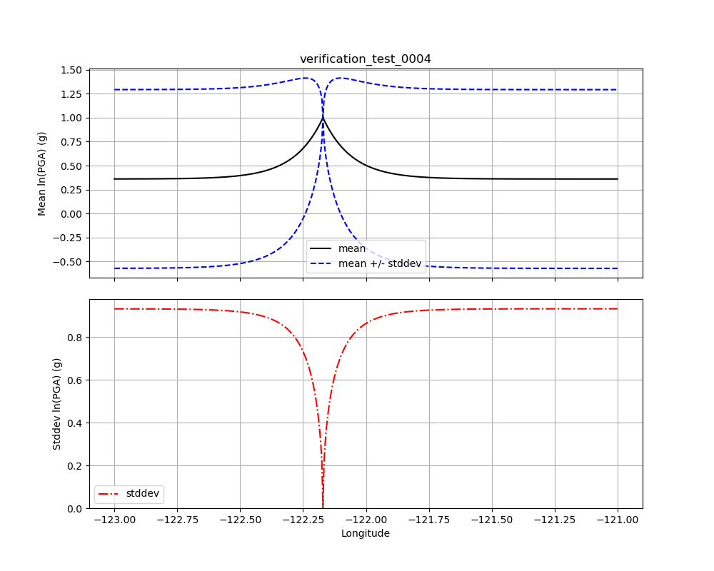
Fig. 1.19 Verification Test 0004. Two observations at the same location along a line, both with amplitudes of +1.0. The black line shows the conditional mean, the blue lines show the conditional mean +/– the conditional standard deviation (upper plot), and the red line shows the conditional standard deviation (lower plot). Compare with Fig. 1.18.¶
Test 0004b¶
Test 0004b uses an identical set up to Test 0004, except that the two observations (of amplitude +1.0) have been separated by 1 degree of longitude. Thus, they are no longer highly correlated and, consequently, the event bias has increased. The result is visualized in Fig. 1.20 which may be compared with Fig. 1.19. Note that in Test 0004, the conditional mean far from the observations was less than 0.5, whereas, in Test 4b, it is greater than 0.5; this consequence is a result of the greater bias of Test 0004b. Similarly, the uncertainty at distance from the observations is slightly less in Test 0004b than in Test 0004 because the two essentially independent observations have reduced the uncertainty of the bias, which lowers the overall uncertainty.
{kind=link}
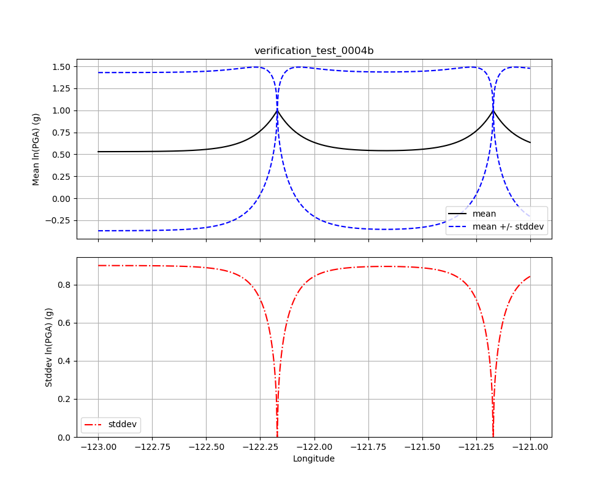
Fig. 1.20 Verification Test 0004b. Two observations at different locations along a line, both with amplitudes of +1.0. The black line shows the conditional mean, the blue lines show the conditional mean +/– the conditional standard deviation (upper plot), and the red line shows the conditional standard deviation (lower plot). Compare with Fig. 1.19.¶
Test 0005¶
Test 0005 also has two co-located observations (see Verification Test 0004, above), but here they have opposite amplitudes of +1.0 and –1.0. The result, shown in Fig. 1.21, is that the conditional mean and standard deviation behave as if there were only a single observation with the mean amplitude of the two observations (i.e., 0).
{kind=link}
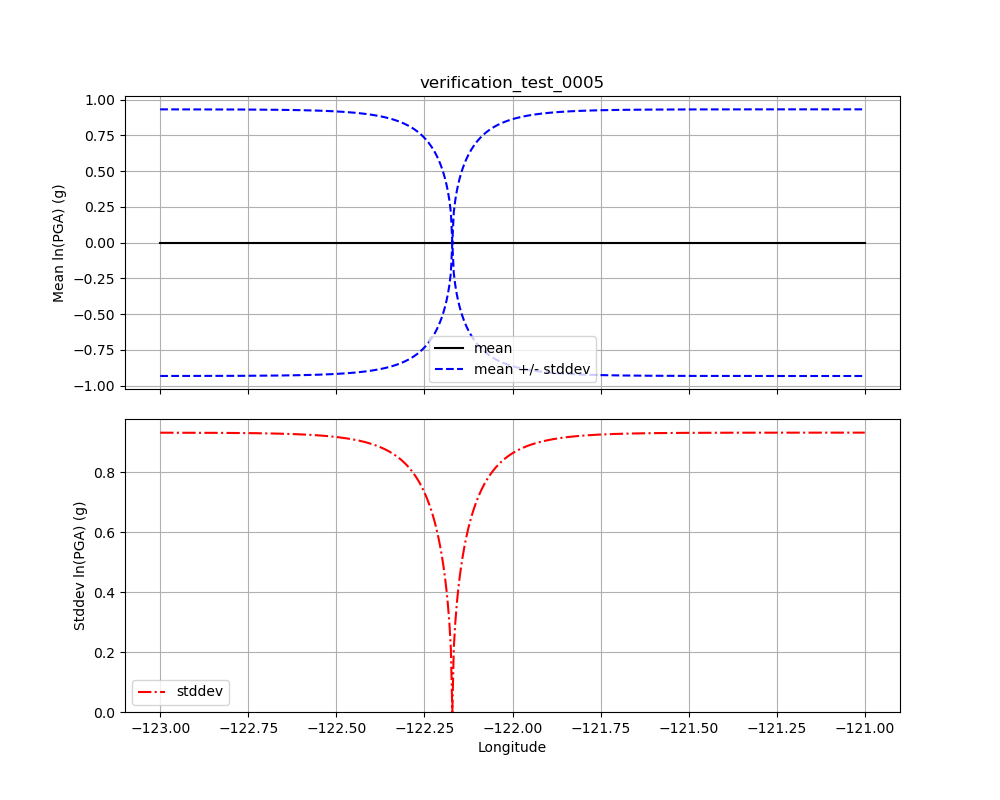
Fig. 1.21 Verification Test 0005. Two observations at the same location along a line, with amplitudes of +1.0 and –1.0. The black line shows the conditional mean, the blue lines show the conditional mean +/– the conditional standard deviation (upper plot), and the red line shows the conditional standard deviation (lower plot).¶
Test 0006¶
Fig. 1.22 illustrates Verification Test 0006. Forty evenly-spaced observations, all with amplitudes of +1.0 are used. Most of the observations are to the left of center of the plot (and extend some ways off the left edge of the plot). Here we note that the bias has moved significantly toward the mean of the data (as compared with a single observation as in Fig. 1.18), and the conditional standard deviation at distance has decreased toward the within-event value of 0.8.
{kind=link}
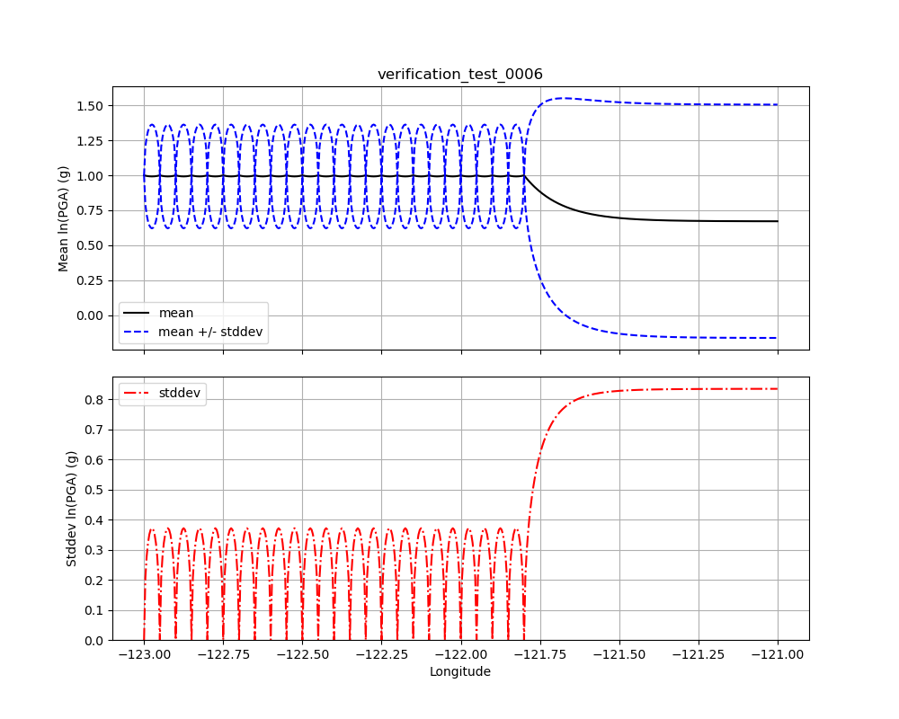
Fig. 1.22 Verification Test 0006. Forty evenly-space observations along a line, with amplitudes of +1.0 (note that the observations extend some distance off the left edge of the figure). The black line shows the conditional mean, the blue lines show the conditional mean +/– the conditional standard deviation (upper plot), and the red line shows the conditional standard deviation (lower plot).¶
Test 0007¶
Verification Test 0007 uses a single observation with an amplitude of +1.0. The observation is of spectral acceleration (SA) at a period of 1.0 s. The conditional mean SA was computed for the location of the observation at a variety of periods ranging from 0.1 s to 10.0 s. A separate bias is computed for each period, and the correlation between the observation and the amplitude being computed decreases as the ratio of the two periods decreases, thus the amplitude tends toward zero as the ratio of the periods decreases. At periods far from the observation period, the bias approaches 0 and its standard deviation approaches the between-event standard deviation, thus the conditional standard deviation approaches the combined between-event and within-event standard deviation (which, in our tests is 1.0).
{kind=link}
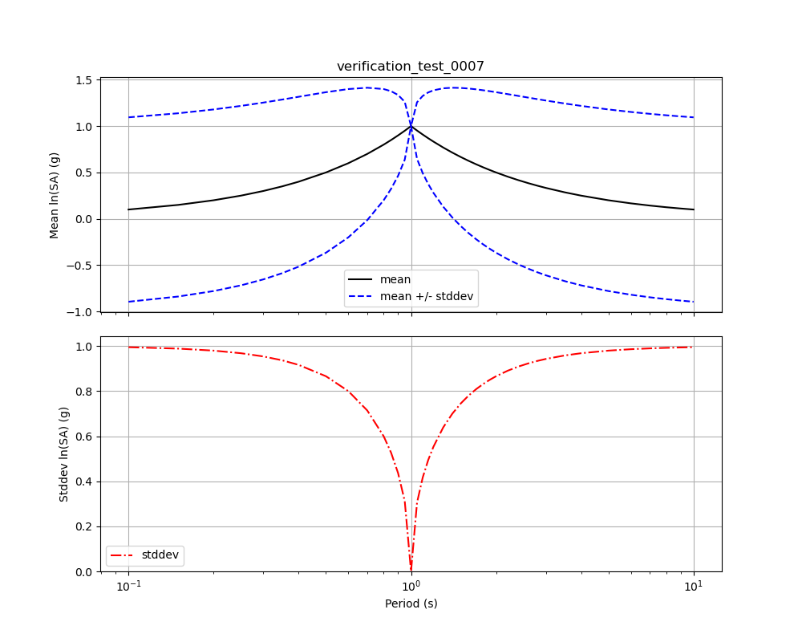
Fig. 1.23 Verification Test 0007. A single observation of spectral acceleration (with an amplitude of 1.0) at a period of 1.0 s, and the conditional spectral acceleration at periods from 0.1 s to 10.0 s. The black line shows the conditional mean, the blue lines show the conditional mean +/– the conditional standard deviation (upper plot), and the red line shows the conditional standard deviation (lower plot).¶
Test 0008¶
Verification Test 0008 demonstrates the effect of uncertainty in the value at the observation point. If we consider equations (1.14) and (1.15), and the supporting equations (1.16) and (1.17) from Test 0003, the additional uncertainty is represented by the term \(\sigma_\epsilon\). Fig. 1.24 illustrates five separate cases to show the effect of five values of \(\sigma_\epsilon\): 0.0, 0.75, 1.5, 3.0, and 6.0 on an observation with an amplitude of 1.0 (as in Test 0003). As we did with Test 0003, we can compute the bias and the adjusted within-event standard deviation for each of the five cases. The case for \(\sigma_\epsilon=0.0\) was demonstrated in Test 0003. Here we will demonstrate \(\sigma_\epsilon=0.75\).
First we recompute the bias variance and the bias:
At the observation point, we have:
As we see in Fig. 1.18, at the observation point, for the \(\sigma_\epsilon=0.75\) line, the mean is 0.64 (top), and the standard deviation is 0.6 (bottom)
At distance from the observation we have:
In Fig. 1.18, at distance from the observation point, for the \(\sigma_\epsilon=0.75\) line, the mean is about 0.23 (top), and the standard deviation is about 0.96 (bottom).
Doing these calculations for all five cases of \(\sigma_\epsilon\) we find the mean at the observation point to be about (1.0, 0.64, 0.31, 0.1, 0.03), with standard deviations (0.0, 0.6, 0.83, 0.95, 0.99). At distance, the means are (0.36, 0.23, 0.11, 0.04, 0.01) with standard deviations (0.93, 0.96, 0.98, 0.99, 1.0).
{kind=link}
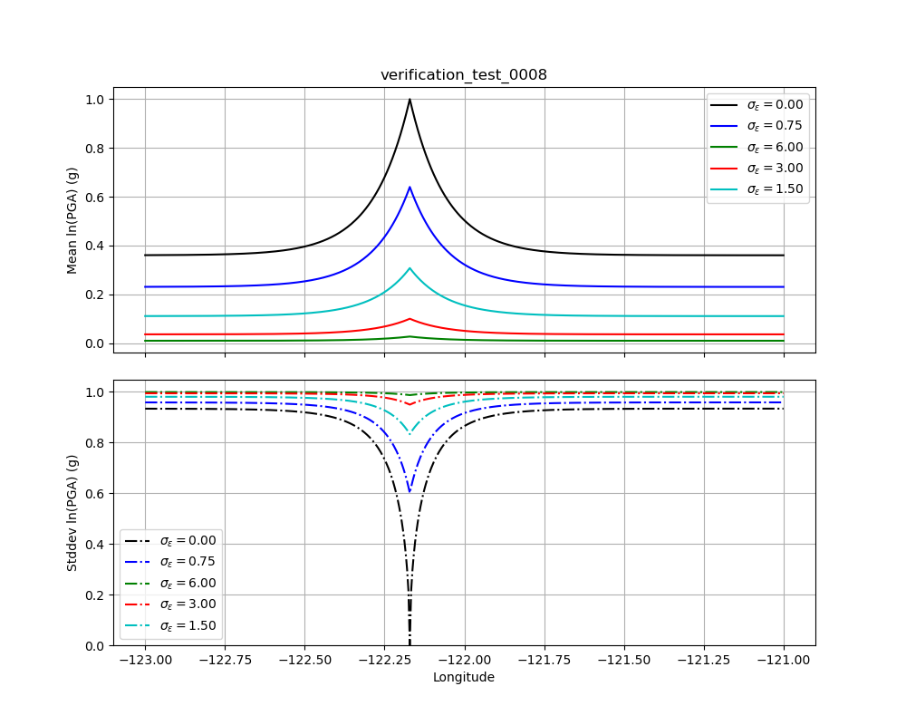
Fig. 1.24 Verification Test 0008. Five separates runs of ShakeMap each using a single observation with an amplitude of +1.0, but with increasing uncertainty. The upper plot (solid lines) shows the conditional means, and the lower plot (dashed lines) shows the conditional standard deviations. The black lines should be identical to their counterparts in Fig. 1.18.¶
Test 0009¶
Test 0009 (see Fig. 1.25) has five observations: the central observation has an amplitude of 0.75, while the other four observations have amplitudes of 1.0. All five have a standard deviation of 0.2. The spacing of the higher amplitudes was chosen to exert a strong influence on the amplitude at the location of the central observation, but despite that influence its conditional mean should approach the observational amplitude (0.75) from below, but not reach or exceed it.
{kind=link}
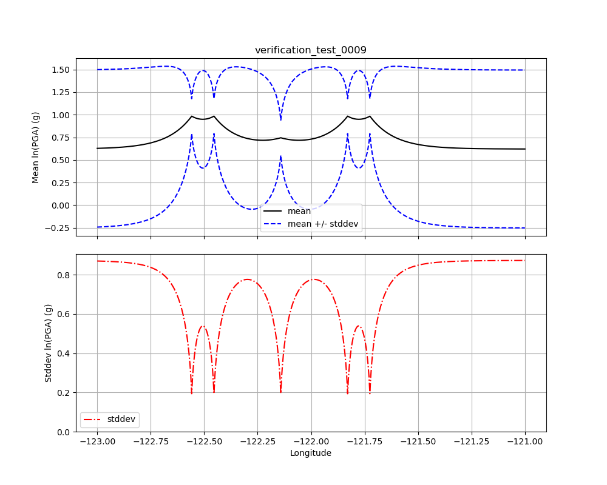
Fig. 1.25 Verification Test 0009. Five observations: the central observation has an amplitude of 0.75, while the other four have amplitudes of 1.0. All five observations have a standard deviation of 0.2. The black line shows the conditional mean, the blue lines show the conditional mean +/– the conditional standard deviation (upper plot), and the red line shows the conditional standard deviation (lower plot).¶
Test 0010¶
Like Test 0009, Test 0010 (see Fig. 1.26) has five observations: the central observation has an amplitude of 0.75, while the other four observations have amplitudes of 1.0. All five have a standard deviation of 0.2. Here, though, the spacing of the higher amplitudes was chosen so that the conditional amplitude at the location of the central observation would approach the assigned amplitude from above. The amplitude should not (quite) reach the observational value (0.75), or go below it.
{kind=link}
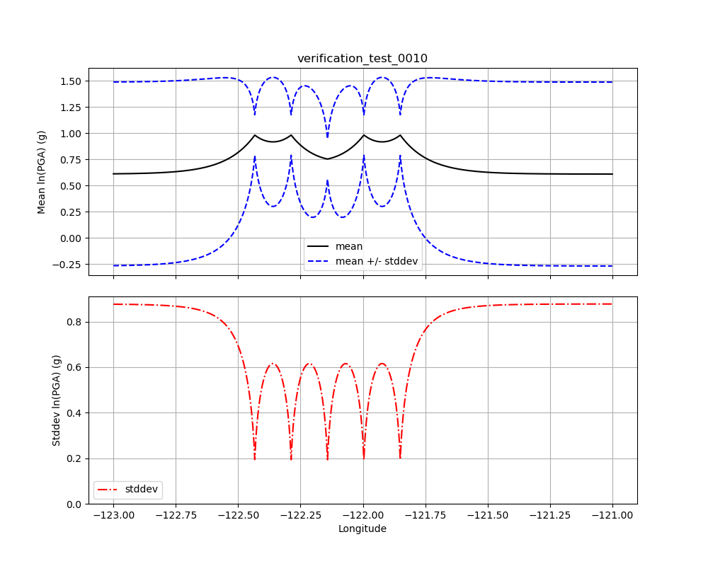
Fig. 1.26 Verification Test 0010. Five observations: the central observation has an amplitude of 0.75, while the other four have amplitudes of 1.0. All five observations have a standard deviation of 0.2. The black line shows the conditional mean, the blue lines show the conditional mean +/– the conditional standard deviation (upper plot), and the red line shows the conditional standard deviation (lower plot). Compare with Fig. 1.25.¶
Test 0011¶
The purpose of this test is to verify the orientation of the Vs30 grid and the generic amplification factors. The origin and magnitude are those of the January 17, 1994, Northridge, California earthquake. Fig. 1.27 is an image of 3.0 s PSA. It shows that the coastline and other geographic features of the Vs30 map are in the proper orientation. This test also uses two generic amplification files that cover the same geographic area: one file has values of 1.0 for the northern half of the grid, and 0.0 for the southern half, while the second file has values of 1.0 for the western half and 0.0 for the eastern half. Thus, the northwest quadrant has a combined amplification of 2.0, the northeast and southwest quadrants have amplification factors of 1.0, and the southeast quadrant has an amplification of 0.0. The figure demonstrates that the combined amplifications are working correctly and are in the proper orientation.
{kind=link}
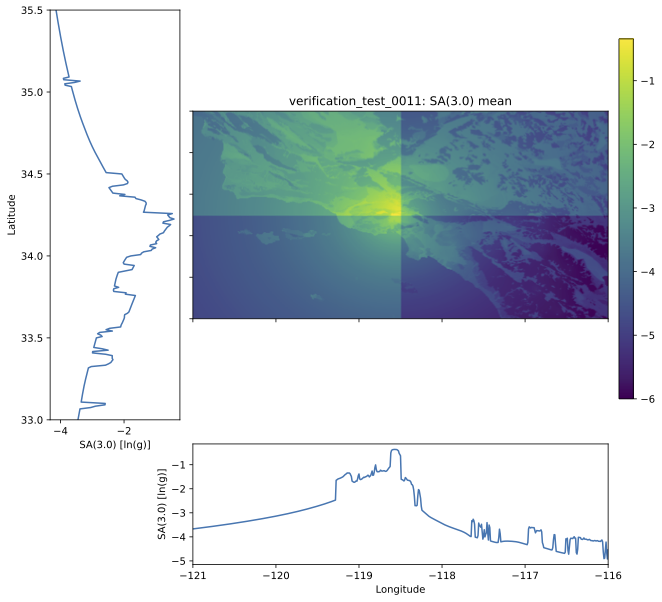
Fig. 1.27 Verification Test 0011. 3 s PSA map using the epicenter and magnitude of the January 17, 1994, Northridge, California earthquake. The coastline and other background features are the result of site amplification from the Vs30 file. The major north-south and east-west divisions are the result of generic amplification factors.¶